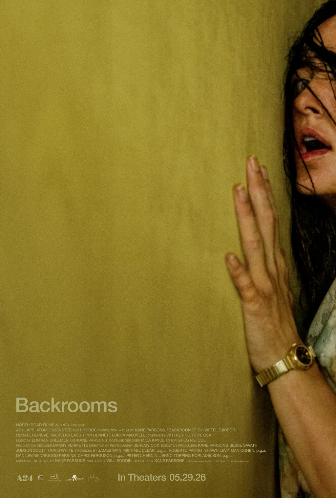

Small budget · Case 3 of 3
Backrooms
A24 rode a built-in internet fandom with a low-cost, fan-native campaign to an $81.4M opening on a $10M budget, though its front-loaded run shows fandom drives openings more than legs.
- Studio
- A24
- Release
- May 29, 2026
- Director
- Kane Parsons
- Rating · genre · runtime
- R · Horror / sci-fi · 105 min (sources conflict)
- Audience score
- CinemaScore B- · RT 85% / 74%
01
Did it work?
The result
Domestic total / opening weekend
$197.5M / $81.4M
Made $81.4M in its first weekend in the US and Canada and $197.5M there by the end of its run, plus $400.1M worldwide.
#5 of 6
Return on cost
20.0×
Every $1 spent making and marketing it ($10.0M + $10.0M) brought back $20.00 in worldwide ticket sales. Estimated profit: about $236.7M.
#1 of 5Marketing unverified
Beat the pre-release forecast
4.07×
Opened at $81.4M, 4.1 times what was expected. Early tracking said $20M+; forecasts in the final week rose to $40M–$55M.
#1 of 5
02
How was it received?
Critics vs. audience
Critic reviews
319 + 47
319 critics reviewed it on Rotten Tomatoes and 47 on Metacritic. More reviews means more press attention.
Review scores
85% · 76
85% of critics gave it a positive review and they averaged 76/100 on Metacritic. Opening-night audiences graded it B- (CinemaScore).
#5 of 6
Critics vs. regular viewers
5-pt gap
Critics scored it 76/100; everyday Metacritic users gave it 71/100. On Rotten Tomatoes, 85% of critics and 74% of audiences liked it. Critics and audiences mostly agreed.
03
What was made
Production pull and budget efficiency
Production pull (score, cast, sets)
30,000+ sq ft of sets
Its eerie yellow rooms were built for real on four soundstages from the director's own 3D designs, made in free software. It won horror awards for its cinematography and score.
Budget efficiency
40.0×
Earned 40.0 times its $10.0M production budget in worldwide ticket sales (marketing costs not included).
#2 of 6
Why it mattered and who it reached
Matched what fans knew
Building the YouTube series' yellow rooms for real gave existing fans the world they already loved; 58% came for the Backrooms story. It had the most filmmaking talk of the six (28%), but a B- CinemaScore and short run show the sets brought fans in more than they kept new viewers coming.
04
Who was in it and who they reached
Cast reach, amplification, pairing and fans
Cast reach
Creator over cast
Even with Chiwetel Ejiofor and Renate Reinsve in the cast, fans talked about director Kane Parsons almost 10 times more often on X.
Cast amplification share
9%
Of 8,631 posts on X that named the cast or the director, 9% named the cast. Higher means the stars, not the filmmaker, drove the conversation.
Pairing lift
Not measured
Not tracked for this film. Only The Odyssey and Anyone But You have data on stars appearing together.
Fan participation
1.1B
TikTok views from about 10,000 fan videos in the month of release, while fans decoded hidden lore together on Reddit and Discord.
05
How it was sold
Buzz, trust and premium formats
Scarcity = buzz (first reaction)
May 7 · 22 days out
A premiere with a Q&A three weeks early, then 22,079 posts on X around release, the most of any film here.
Audience trust (influencer marketing)
53%
53% of opening-weekend viewers said they would definitely recommend it. Social-media critics posted after the premiere, many with mixed reactions.
#5 of 5
Premium format share
17%
17% of opening-weekend ticket sales came from IMAX and other premium screens. It had no IMAX screens.
#3 of 5
06
Who showed up
Attendance, drivers and demographics
Attendance rate
$23,665
Each theater averaged this much in ticket sales on opening weekend, a sign of how full the screens were. About 5.8M people went opening weekend, 43% of all moviegoers that weekend.
#3 of 6
Attendance drivers
58% for the lore
Most came for the Backrooms story they already knew online (58%), over half because it's an A24 film, and 30% for director Kane Parsons.
Demographics
88% under 35
62% male, average age 25, and 44% under 21. The audience was 38% white, 33% Hispanic, 13% Black and 10% Asian.
Cast effects on demographics
Creator > cast
The cast barely came up online (9% of posts). The director's own fanbase made the audience young and mostly male.
07
What people said online
Volume, sentiment, virality and UGC
Conversation volume
22,079
Posts on X around its release, and 1,612 more in the last 90 days. Its top 50 Reddit posts drew 2,335 comments.
#2 of 6
Audience sentiment
3.3★
Average rating out of 5 on Letterboxd, where 13% of users gave it 4.5 or 5 stars. 74% of Rotten Tomatoes audiences liked it.
#5 of 6
Viral per platform
17 posts >100K
More of its sampled TikToks passed 100,000 plays than any other film here, on top of about 200M YouTube views before release. Its 100 latest TikToks drew 13,604,669 plays.
User-generated content (UGC)
~10K
Fan TikToks in the month of release, and even brands like McDonald's, IKEA and Minecraft made their own Backrooms posts.
08
Did it last?
Staying power
Best staying power
2.4×
Over its full run in the US it earned 2.4 times its opening weekend. Its second weekend was down 68% from the first. Most of its money came early; a July re-release slowed its drop.
#6 of 6
All figures come from the team's Fall 2026 research. Rank badges compare all six films (#1 = highest). "Unverified" and "company-reported" mark figures not yet confirmed by an independent source.